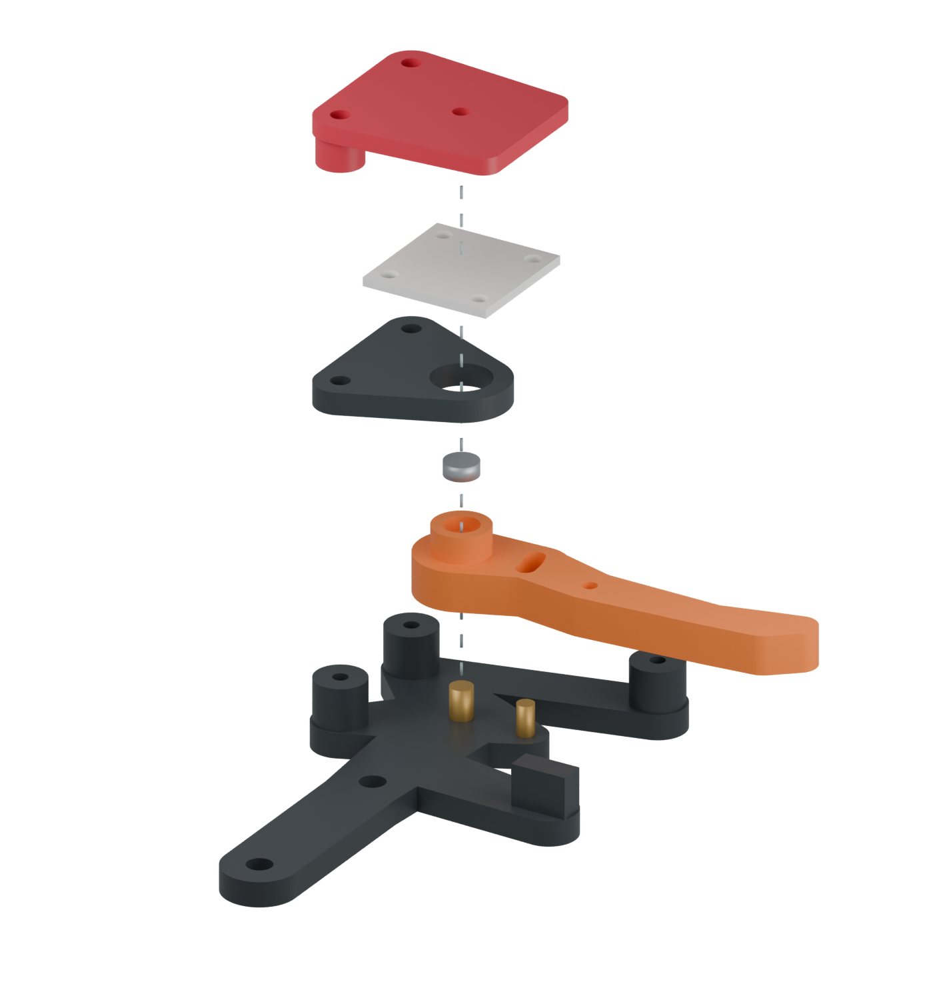
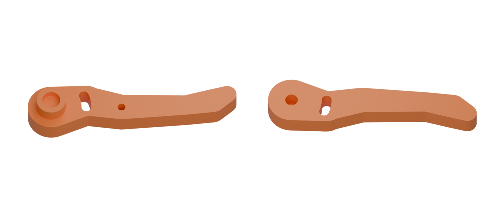
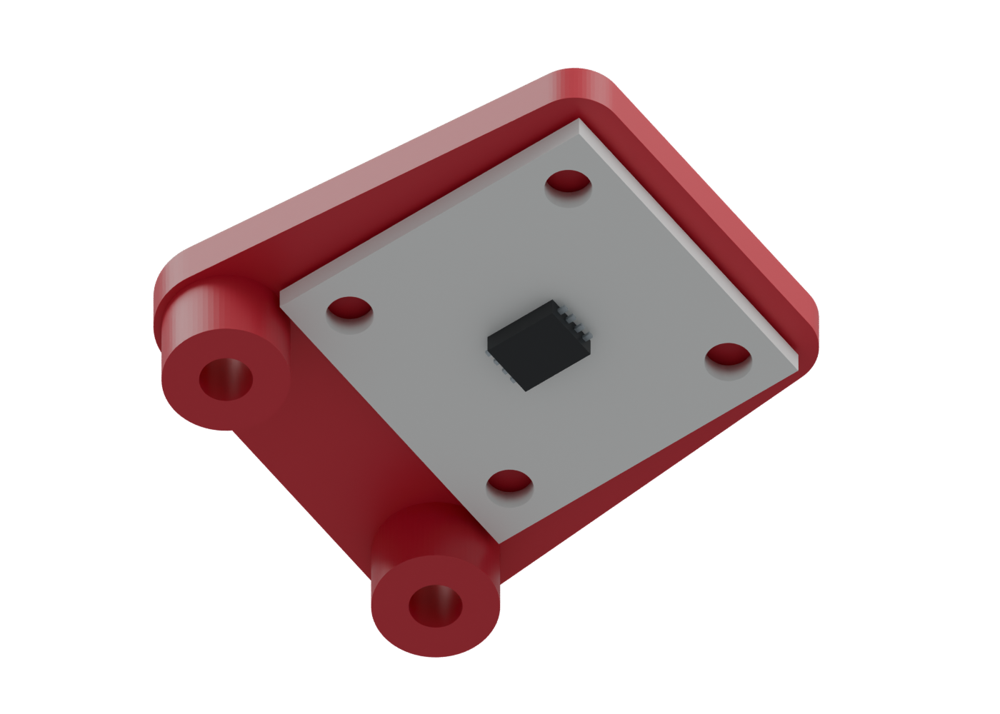
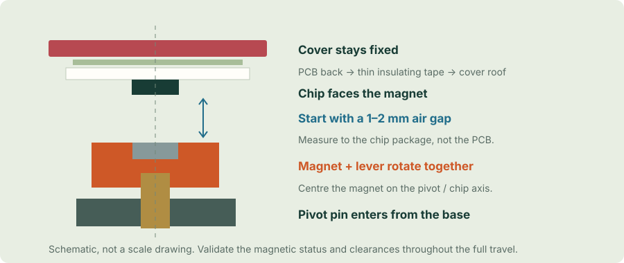
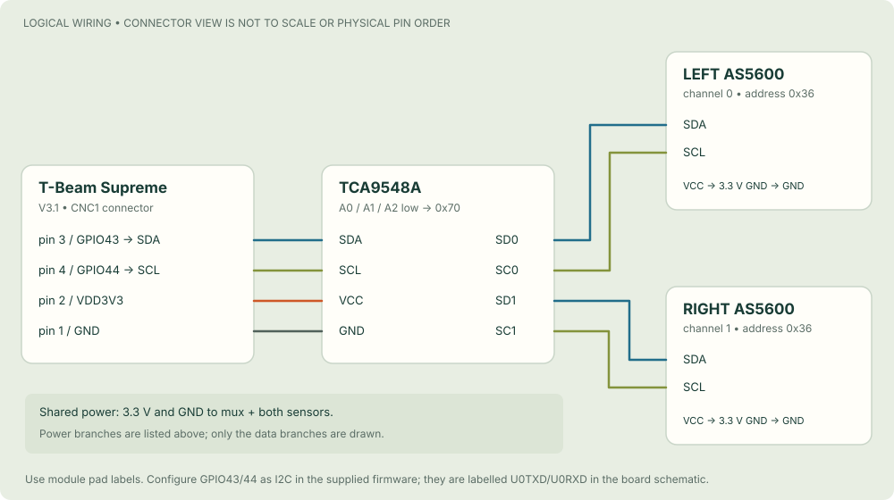

AT THE HANDLEBAR
Two simple sensor heads
A printed lever, a return spring and a magnetic encoder. Four flexible wires leave each fixed housing: 3.3 V, ground, SDA and SCL.
Make the hardware. See the signal.
A practical workshop guide for two magnetic levers: from printed parts and four-wire sensors to live readings on your computer.
Maneta v01 · AS5600 · TCA9548A · LilyGO T-Beam Supreme

THE SYSTEM
Each AS5600 measures the angle of a magnet fixed to a lever. A TCA9548A selects the two sensors in turn, and the T-Beam Supreme streams both readings over Bluetooth LE.
AT THE HANDLEBAR
A printed lever, a return spring and a magnetic encoder. Four flexible wires leave each fixed housing: 3.3 V, ground, SDA and SCL.
ON THE COMPUTER
The browser tester displays raw angle, magnetic health, calibrated travel and a history plot. It can export a local CSV for inspection.
Scope of this build: an indoor simulator input and a standalone sensor test system. The firmware and tester described here do not control a physical brake or the KICKR. The AS5600 measures angle; the spring and rubber determine how the lever feels. Connecting this proportional signal to the riding simulator is a separate integration step.
The electrical target in this guide is the LilyGO T-Beam Supreme V3.1 with ESP32-S3. Check the board revision and schematic before wiring. Other T-Beam models can have different pin assignments.
BEFORE YOU START
Quantities below make a pair of v01 levers. Work on an unpowered bench and dry-fit the mechanical parts before permanent adhesive.
| Part | Quantity | Specification / source |
|---|---|---|
| PETG printed parts | 12 | Per hand: base, lever, guide, cover and two identical clamp halves. Download print files. |
| AS5600 modules + magnets | 2 sets | 3.3 V modules and diametrically magnetized discs. v01 nominal magnet: Ø6 × 2.5 mm. Module supplier. |
| TCA9548A multiplexer | 1 | Breakout exposing upstream SDA/SCL and channel SD0/SC0, SD1/SC1. Module supplier. |
| T-Beam Supreme | 1 | LilyGO ESP32-S3 board, V3.1 target. USB data cable for power, upload and console. Board documentation. |
| Smooth brass pins | 4 | Two Ø4 × 10 mm pivots and two Ø3 × 10 mm travel limiters. |
| Cover / guide screws | 4 | M3 × 20. Check thread engagement in the actual print. |
| Spring anchor hardware | 4 sets | M3 × 8 screw, washer and approximately 2 mm tubular spacer per anchor. |
| Return springs + rubber stops | 2 each | Extension spring starting point: 18–20 mm relaxed eye spacing, operating around 21–30 mm. Rubber starting size: 9 × 6 × 5–6 mm. |
| Handlebar clamp hardware | 4 sets | v01: M4 × 40 bolts, low-profile locking nuts and thin washers. Check the 22.2 mm clamp fit and actual bolt length. |
| Wiring and mounting supplies | As needed | Flexible four-core leads, a suitable CNC1 connector lead, insulating double-sided tape, heat-shrink, strain relief and suitable epoxy. |
Useful tools: calipers, a small file/deburring tool, hex keys, soldering iron, multimeter and a computer with USB and Bluetooth. Use a USB data cable; a charging-only cable cannot upload firmware.
Nominal geometry: the v01 dimensions describe the design, not a guaranteed printed fit. Measure the handlebar tube, pins, magnet and sensor board. The spring rate, rubber feel and clamp tightening torque need validation on the built assembly.
01 / MECHANICS
Use matching left- or right-hand parts. The trigger extends outward towards the grip and bar end; the pivot sits inboard.

Remove printing burrs. The Ø4 mm pivot enters the main axis of the base; the Ø3 mm limiter sits 12 mm away and enters the curved lever slot. In v01, both 10 mm pins sit flush underneath the base. Secure the pins in the base only, keeping adhesive away from moving surfaces.
Place the lever on both pins with its raised collar facing up. Lower the guide around that collar and align its two fixing holes with the base pillars. The lever must turn freely; the guide holds it vertically without gripping it.
Join the fixed post to the lever’s spring anchor. Fit a short spacer, spring eye and washer under each M3 × 8 screw so the eye can pivot. Check that the spring can cover the intended travel without permanent deformation.
Attach the rubber to the vertical backstop facing the lever. Its thickness sets when contact begins; its stiffness changes the finger feel. Check a gentle, medium and firm pull, then verify that the lever returns every time.
Pass the two M3 × 20 screws through the cover and guide into the base pillars. Check engagement and that the screws do not bottom out. Tighten gently, verify free return, then remove the cover to install the sensor.
v01 nominal travel is 22°, with a 55 mm pivot-to-finger radius. Do not use the PCB as a travel stop. Fit the handlebar clamp only after the complete bench assembly moves and returns correctly.
SENSOR ALIGNMENT

Attach the PCB’s back to the inner cover roof with thin insulating double-sided tape. Centre the AS5600 chip on the pivot axis; the board outline is not the alignment reference.
The two cover fixing holes attach to the guide/base. The v01 cover does not provide separate screw posts for the four PCB holes.

Measure the recess and magnet. v01 expects a Ø6 × 2.5 mm disc, with its face level with the collar top. Use a measured nonmagnetic centring insert or shim if the chosen magnet needs one. Keep the separate underside pivot bore free for its pin.
Begin around 1–2 mm from the magnet face to the facing chip-package surface. The manufacturer’s typical 0.5–3 mm range depends on the magnet. Confirm magnetic health throughout the full travel before choosing the final spacing.
No chip, solder joint or wire may contact the moving mechanism. Equal spacers under both cover feet raise the cover; a stable insulating PCB pad can lower the board. Recheck screw engagement and parallelism. Route and strain-relieve the wires on the stationary structure.
Temporarily retain the magnet and board without allowing them to slip. Run the electrical test below, then secure the magnet, let the adhesive cure and repeat the same checks with the cover tightened.
02 / ELECTRONICS
Both AS5600s have address 0x36. Put them on separate mux channels so the controller can read one at a time.
T-Beam Supreme V3.1 / CNC1 / 3.3 V

The supplied firmware uses the Supreme V3.1’s CNC1 connector. Its schematic labels the two data pins U0TXD/U0RXD; the firmware configures them as I2C instead. USB is used for the serial console.
| CNC1 pin / signal | Firmware role | Connect to |
|---|---|---|
| 1 · GND | Ground | Mux GND and both sensor GND pads |
| 2 · VDD3V3 | 3.3 V supply | Mux VCC and both sensor VCC pads |
| 3 · U0TXD / GPIO43 | SDA | Mux upstream SDA |
| 4 · U0RXD / GPIO44 | SCL | Mux upstream SCL |
CNC1 uses the board’s VDD3V3 rail; this connection does not require enabling an auxiliary PMU rail. The firmware leaves the internal I2C and PMU buses alone. Do not substitute a BLDO2 power header without accounting for its power configuration.
| AS5600 pad | Left lever | Right lever |
|---|---|---|
| VCC | Shared 3.3 V | Shared 3.3 V |
| GND | Common GND | Common GND |
| SDA | Mux SD0 | Mux SD1 |
| SCL | Mux SC0 | Mux SC1 |
| DIR | Defined logic level; connect to GND if the module does not already strap it. | |
| OUT / programming pad | Unused for this I2C test. Do not burn permanent sensor settings. | |
Keep mux A0, A1 and A2 low for address 0x70. RESET must be pulled high for normal operation. Check whether the breakout already includes the needed straps and resistor.
SDA/SCL need suitable pull-ups to 3.3 V upstream and on used branches. Inspect fitted resistors before adding more. Begin with short bench leads and the firmware’s 100 kHz bus speed.
Firmware writes 0x01 to select channel 0, then 0x02 for channel 1. Each write ends with STOP before reading 0x36. It never enables both identical-address sensor branches together.
Before power: check connector orientation and continuity, confirm 3.3 V rather than 5 V, and inspect for a VCC-to-GND short. Keep all grounds common. Change wiring with USB and any battery disconnected.
03 / FIRMWARE
The ESP32-S3 program reads both sensors and advertises as MTB Brake Bench. It sends raw angles and diagnostics every 50 ms; calibration stays in the browser tester.
Download firmware source ZIP · Full build instructions ↗ · BLE protocol ↗
Install PlatformIO IDE for Visual Studio Code, or use PlatformIO Core with Python. Extract the firmware ZIP or clone the repository. Run the commands from the directory containing firmware/; PlatformIO installs the pinned project dependencies.
python -m pip install platformio==6.1.18
python -m platformio run -d firmware/brake-bench -e tbeam-supremeThe project pins Espressif32 6.10.0 and Arduino-ESP32 2.0.17. In PlatformIO IDE, open firmware/brake-bench and use its Build task instead.
Use a data cable and select the board’s USB serial port. This uploads a new application and replaces the firmware currently running on the board. In PlatformIO IDE, open firmware/brake-bench and use its project tasks; in a terminal, run Upload.
python -m platformio run -d firmware/brake-bench -e tbeam-supreme -t uploadIf automatic upload cannot enter the bootloader, hold BOOT, press and release RST, then release BOOT. Retry on the newly enumerated port. After upload, press RST if needed to start the application.
Open the USB serial monitor at 115200 baud. Startup identifies MTB Brake Bench v1 and the selected pins. Once per second, the console reports the mux, channel readings and BLE state. A missing sensor is reported as a fault rather than a valid angle.
python -m platformio device monitor --baud 115200If more than one serial device is connected, add --upload-port COM7 to Upload or --port COM7 to Monitor, replacing COM7 with the actual port. Use the Supreme board’s USB-C data connector. Close another terminal using that port before uploading. The firmware also runs without a serial monitor open.
After flashing, the application starts when the board boots. A computer can supply USB power during the bench test. The board advertises over BLE and resumes advertising after disconnection; no Wi-Fi credentials or cloud account are needed.
What runs on the board: channel selection, bounded I2C reads, magnetic diagnostics, periodic BLE telemetry and serial status. It does not permanently program the AS5600, send brake commands to the simulator or measure finger force. A successful software build is not a substitute for checking the assembled hardware.
04 / VALIDATION
Use Chrome or Edge on a computer with Bluetooth, over this HTTPS site or a localhost server. Open the page directly in the browser, rather than inside an embedded preview.
Turn on Bluetooth, power the controller and press Connect Bluetooth in the tester. Select MTB Brake Bench in the browser chooser. Allow the requested Bluetooth access. Connect from this page; operating-system Bluetooth pairing is not the connection workflow.
Both channels should show fresh readings and a healthy magnetic field. AS5600 status must remain MD = 1, ML = 0, MH = 0 throughout travel. Fix weak/strong field, missing sensor or stale readings before capturing endpoints.
Release a lever, hold it still for at least half a second and press Set released. Hold a comfortable full pull steadily, then press Set full pull. Repeat for the second lever. The percentage is calibrated lever travel, not pressure; the tester handles direction and wrapping between 4095 and 0. Choose Remember calibration to save endpoints for this device in this browser.
Pull and release each lever ten times. Check smooth motion, a stable return point and independent channels. Inspect the graph and choose Export CSV if needed. The file labels Bluetooth and demo data explicitly. Repeat after securing the PCB, curing the magnet adhesive and tightening the cover.
This checklist is saved only in this browser. Checking a box records your own verification; it does not run a hardware test.
Demo mode generates sample signals for exploring the interface. It does not connect to or validate hardware. The tester keeps data in the browser and exports files locally.
WORKSHOP NOTES
Check power and serial startup first. Use a supported browser with Bluetooth permission, and close another tab or application already connected to the board. Confirm the device is running the brake-bench firmware and advertising as MTB Brake Bench. Reboot and retry. A browser chooser cancellation is not a sensor fault.
Disconnect power and check VCC, GND, SDA and SCL against the tables. Check the mux address straps and RESET pull-up. Confirm each sensor is on its own branch and that SC/SCL has not been swapped with SD/SDA. Check solder joints and bus pull-ups. The firmware’s serial diagnostics identify the channel.
Confirm a diametrically magnetized disc centred on the chip axis. Check the air gap and any tilt. Move the magnet closer for a weak field or farther away for an excessive field, then test the entire stroke. Software calibration cannot repair poor magnetic alignment.
Check that the magnet rotates with the lever while the PCB remains fixed. Look for a loose board, sliding magnet, cable movement or contact with the chip. An isolated wrap between 4095 and 0 is normal for the raw angle; the tester handles it when calibrating travel.
Inspect the pivot and guide for binding, spring eyes trapped under washers, an overly stiff rubber stop or a wire in the moving mechanism. Test mechanics before adding the electronics. Do not tighten the cover to force a misaligned assembly together.
The readings are no longer fresh enough to represent lever position. Reconnect the controller and confirm both sensors are healthy. The tester marks stale or invalid values instead of treating the last received position as a live reading.
The bench firmware and miniapp validate the custom lever’s sensor path. They do not yet connect the proportional BLE signal to the riding simulator. The simulator’s existing right Zwift Click A-button braking remains a separate input.
OPEN WORKSHOP
The guide’s dimensions come from Maneta v01. Electrical connections are tied to the named board revision and manufacturer references.
Validation status: this guide describes the design and supplied software. Physical assembly, sensor readings, radio connection and return feel need a bench test on the completed device. CAD views show original printed geometry; electronic component details, spring and hardware rendering are illustrative.